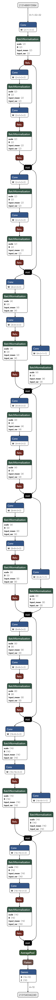

实用函数¶
随机种子生成¶
set_random_seed¶
- pyvqnet.utils.set_random_seed(seed)¶
设定全局随机种子。
- Parameters:
seed – 随机数种子。
Note
当指定固定随机数种子时,随机分布将依据随机种子产生固定的伪随机分布。 影响包括: tensor.randu , tensor.randn ,含参经典神经网络以及量子计算层的参数初始化。
Example:
import pyvqnet.tensor as tensor from pyvqnet.utils import get_random_seed, set_random_seed set_random_seed(256) rn = tensor.randn([2, 3]) print(rn) rn = tensor.randn([2, 3]) print(rn) rn = tensor.randu([2, 3]) print(rn) rn = tensor.randu([2, 3]) print(rn) print("########################################################") from pyvqnet.nn.parameter import Parameter from pyvqnet.utils.initializer import he_normal, he_uniform, xavier_normal, xavier_uniform, uniform, quantum_uniform, normal print(Parameter(shape=[2, 3], initializer=he_normal)) print(Parameter(shape=[2, 3], initializer=he_uniform)) print(Parameter(shape=[2, 3], initializer=xavier_normal)) print(Parameter(shape=[2, 3], initializer=xavier_uniform)) print(Parameter(shape=[2, 3], initializer=uniform)) print(Parameter(shape=[2, 3], initializer=quantum_uniform)) print(Parameter(shape=[2, 3], initializer=normal)) # [ # [-1.2093765, 1.1265280, 0.0796480], # [0.2420146, 1.2623813, 0.2844022] # ] # [ # [-1.2093765, 1.1265280, 0.0796480], # [0.2420146, 1.2623813, 0.2844022] # ] # [ # [0.3151870, 0.6721524, 0.0416874], # [0.8232620, 0.6537889, 0.9672953] # ] # [ # [0.3151870, 0.6721524, 0.0416874], # [0.8232620, 0.6537889, 0.9672953] # ] # ######################################################## # [ # [-0.9874518, 0.9198063, 0.0650323], # [0.1976041, 1.0307300, 0.2322134] # ] # [ # [-0.2134037, 0.1987845, -0.5292138], # [0.3732708, 0.1775801, 0.5395861] # ] # [ # [-0.7648768, 0.7124789, 0.0503738], # [0.1530635, 0.7984000, 0.1798717] # ] # [ # [-0.4049051, 0.3771670, -1.0041126], # [0.7082316, 0.3369346, 1.0237927] # ] # [ # [0.3151870, 0.6721524, 0.0416874], # [0.8232620, 0.6537889, 0.9672953] # ] # [ # [1.9803783, 4.2232580, 0.2619299], # [5.1727076, 4.1078768, 6.0776958] # ] # [ # [-1.2093765, 1.1265280, 0.0796480], # [0.2420146, 1.2623813, 0.2844022] # ]
get_random_seed¶
- pyvqnet.utils.get_random_seed()¶
获取当前随机数种子。
Example:
import pyvqnet.tensor as tensor from pyvqnet.utils import get_random_seed, set_random_seed set_random_seed(256) print(get_random_seed()) #256
VQNet2ONNX模块¶
VQNet2ONNX模块 支持将 VQNet 模型以及参数转化到 ONNX 模型格式。通过 ONNX 可以完成将 VQNet 模型到多种推理引擎的部署,包括 TensorRT/OpenVINO/MNN/TNN/NCNN,以及其它对 ONNX 开源格式进行支持的推理引擎或硬件。
环境依赖:onnx>=1.12.0
Note
当前不支持QPanda量子线路模块转换为ONNX,仅支持纯经典算子构成的模型。
使用 export_model 函数导出ONNX 模型。该函数需要两个以上的参数: 包括VQNet构建的模型 model , 模型单输入 x 或多输入 *args。
以下是对 ResNet 模型的ONNX导出的示例代码,并使用 onnxruntime 进行验证.
导入相关库
import numpy as np
from pyvqnet.tensor import *
from pyvqnet.nn import Module, BatchNorm2d, Conv2D, ReLu, AvgPool2D, Linear
from pyvqnet.onnx.export import export_model
from onnx import __version__, IR_VERSION
from onnx.defs import onnx_opset_version
print(
f"onnx.__version__={__version__!r}, opset={onnx_opset_version()}, IR_VERSION={IR_VERSION}"
)
模型定义
class BasicBlock(Module):
expansion = 1
def __init__(self, in_chals, out_chals, stride=1):
super().__init__()
self.conv2d1 = Conv2D(in_chals,
out_chals,
kernel_size=(3, 3),
stride=(stride, stride),
padding=(1, 1),
use_bias=False)
self.BatchNorm2d1 = BatchNorm2d(out_chals)
self.conv2d2 = Conv2D(out_chals,
out_chals * BasicBlock.expansion,
kernel_size=(3, 3),
padding=(1, 1),
use_bias=False)
self.BatchNorm2d2 = BatchNorm2d(out_chals * BasicBlock.expansion)
self.Relu = ReLu(name="relu")
#shortcut
self.shortcut_conv2d = Conv2D(in_chals,
out_chals * BasicBlock.expansion,
kernel_size=(1, 1),
stride=(stride, stride),
use_bias=False)
self.shortcut_bn2d = BatchNorm2d(out_chals * BasicBlock.expansion)
self.need_match_dim = False
if stride != 1 or in_chals != BasicBlock.expansion * out_chals:
self.need_match_dim = True
def forward(self, x):
y = self.conv2d1(x)
y = self.BatchNorm2d1(y)
y = self.Relu(self.conv2d2(y))
y = self.BatchNorm2d2(y)
y = self.Relu(y)
if self.need_match_dim == False:
return y + x
else:
y1 = self.shortcut_conv2d(x)
y1 = self.shortcut_bn2d(y1)
return y + y1
resize = 32
class ResNet(Module):
def __init__(self, num_classes=10):
super().__init__()
self.in_chals = 64 // resize
self.conv1 = Conv2D(1,
64 // resize,
kernel_size=(3, 3),
padding=(1, 1),
use_bias=False)
self.bn1 = BatchNorm2d(64 // resize)
self.relu = ReLu()
self.conv2_x_1 = BasicBlock(64 // resize, 64 // resize, 1)
self.conv2_x_2 = BasicBlock(64 // resize, 64 // resize, 1)
self.conv3_x_1 = BasicBlock(64 // resize, 128 // resize, 2)
self.conv3_x_2 = BasicBlock(128 // resize, 128 // resize, 1)
self.conv4_x_1 = BasicBlock(128 // resize, 256 // resize, 2)
self.conv4_x_2 = BasicBlock(256 // resize, 256 // resize, 1)
self.conv5_x_1 = BasicBlock(256 // resize, 512 // resize, 2)
self.conv5_x_2 = BasicBlock(512 // resize, 512 // resize, 1)
self.avg_pool = AvgPool2D([4, 4], [1, 1], "valid")
self.fc = Linear(512 // resize, num_classes)
def forward(self, x):
output = self.conv1(x)
output = self.bn1(output)
output = self.relu(output)
output = self.conv2_x_1(output)
output = self.conv2_x_2(output)
output = self.conv3_x_1(output)
output = self.conv3_x_2(output)
output = self.conv4_x_1(output)
output = self.conv4_x_2(output)
output = self.conv5_x_1(output)
output = self.conv5_x_2(output)
output = self.avg_pool(output)
output = tensor.flatten(output, 1)
output = self.fc(output)
return output
测试代码
def test_resnet():
x = tensor.ones([4,1,32,32])#任意输入一个正确shape的QTensor数据
m = ResNet()
m.eval()#为了导出BatchNorm的global mean 以及global variance
y = m(x)
vqnet_y = y.CPU().to_numpy()
#导出onnx model
onnx_model = export_model(m, x)
#保存到文件
with open("demo.onnx", "wb") as f:
f.write(onnx_model.SerializeToString())
#onnxruntime 对比运行结果
import onnxruntime
session = onnxruntime.InferenceSession('demo.onnx', None)
input_name = session.get_inputs()[0].name
v = np.ones([4,1,32,32])
v = v.astype(np.float32)
inputs = [v]
test_data_num = len(inputs)
outputs = [
session.run([], {input_name: inputs[i]})[0]
for i in range(test_data_num)
]
onnx_y = outputs[0]
assert np.allclose(onnx_y, vqnet_y)
if __name__ == "__main__":
test_resnet()
使用 https://netron.app/ 可以可视化VQNet导出的ONNX模型 demo.onnx
{kind=link}
以下是支持的VQNet模块
operator |
operator |
operator |
ones |
floor |
nonzero |
ons_like |
ceil |
isfinite |
full |
round |
isinf |
full_like |
sort |
isnan |
zeros |
argosrt |
isneginf |
zeros_like |
topK |
isposinf |
arange |
argtopK |
logical_and |
linspace |
add |
logical_or |
logspace |
sub |
logical_not |
eye |
mul |
logical_xor |
randu |
divide |
greater |
randn |
sums |
greater_equal |
tiru |
cumsum |
less |
tril |
mean |
less_equal |
__getitem__ |
median |
equal |
__setitem__ |
std |
not_equal |
concatenate |
var |
Conv2D |
stack |
matmul |
Conv1D |
permute |
reciprocal |
ConvT2D |
transpose |
sign |
Linear |
tile |
neg |
Sigmoid |
squeeze |
exp |
Softplus |
unsqueeze |
acos |
Softsign |
swapaxis |
asin |
Softmax |
masked_fill |
atan |
HardSigmoid |
flatten |
sin |
ReLu |
reshape |
cos |
LeakyReLu |
flip |
tan |
ELU |
maximum |
tanh |
Tanh |
minimum |
sinh |
BatchNorm2d |
min |
cosh |
BatchNorm1d |
max |
power |
Dropout |
clip |
abs |
Embedding |
where |
log |
LayerNormNd |
sqrt |
LayerNorm1d |
|
square |
LayerNorm2d |
|
frobenius_norm |
MaxPool1D |
|
log_softmax |
MaxPool2D |
|
AvgPool2D |
||
AvgPool1D |
||
GRU |
||
LSTM |
||
RNN |